청산도 일상·풍습
청산도는 전남 완도에서 19.2km 떨어진 다도해 최남단섬으로 완도항에서 뱃길로 50분 거리에 위치

청산도 관광명소
자연경관이 유난히 아름다워 예로부터 청산여수 또는 신선들이 노닐 정도로 아름답다하여 불리는 선산, 선원
삶의 쉼표가 되는 섬,
청산도
단순히 빠름의 반대가 아니라 환경,자연,시간,계절을
존중하고 나자신을 존중하며 느긋하게 산다는 뜻
청산도는 전남 완도에서 19.2km 떨어진 다도해 최남단섬으로 완도항에서 뱃길로 50분 거리에 위치
자연경관이 유난히 아름다워 예로부터 청산여수 또는 신선들이 노닐 정도로 아름답다하여 불리는 선산, 선원
단순히 빠름의 반대가 아니라 환경,자연,시간,계절을
존중하고 나자신을 존중하며 느긋하게 산다는 뜻